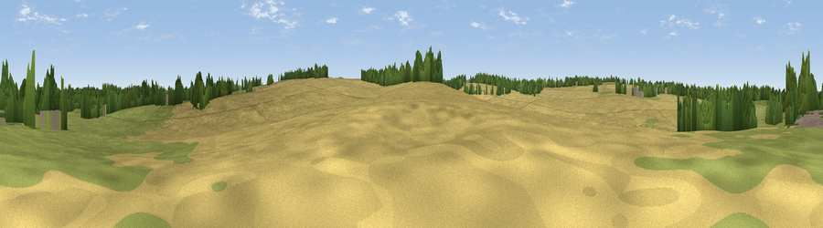

Viewpoint near Odiham
#45229 in England · top 79% of its area beats it · near OdihamWhere it is
The exact computed spot (SU 75234 50391). Click the marker for map links.
The view, rendered

A 360° render of this exact spot computed from the terrain model, tree cover and land cover — summer colours, afternoon light, calibrated against photographs of famous viewpoints. Real trees, hedges and buildings will differ in detail.
The panorama
Grey silhouette: terrain skyline in each direction (720 bearings, Earth curvature and refraction included). Dashed green: skyline with trees (+15 m) and buildings (+8 m) as obstacles. Blue strip: how far the ground is visible on each bearing.
Where the view opens
Wedge length = distance to the farthest visible ground on that bearing (vegetation-aware). Rings at 10, 25 and 50 km.
What fills the view
54% cropland · 31% grassland · 13% woodland · 2% built-up
Angular shares of the visible panorama (visual magnitude), not map area. Landscape diversity 0.45 (0–1 Shannon).
Key numbers
More beautiful places nearby
The staircase of upgrades: each row has a higher view potential than everything closer. Driving times are estimates from straight-line distance, calibrated against real road routing — check an actual route before setting out.
| Place | Direction | Drive | Score |
|---|---|---|---|
| Viewpoint near Odiham | SSW · 1 km | ~4 min | 22.4 |
| Horsedown Common | SSE · 3 km | ~7 min | 54.8 |
| Noar Hill | S · 19 km | ~32 min | 59.8 |
| Temple of the Four Winds | SE · 21 km | ~35 min | 65.4 |
| Viewpoint near Steep | S · 23 km | ~38 min | 68.7 |
| Watership Down | WNW · 26 km | ~42 min | 71.4 |
| Viewpoint near Fernhurst | SE · 27 km | ~43 min | 75.1 |
| Viewpoint near Buriton | S · 30 km | ~47 min | 75.3 |
51.24774, -0.92348 · source: osm peak · position refined by local search. Computed location — check access rights before visiting.